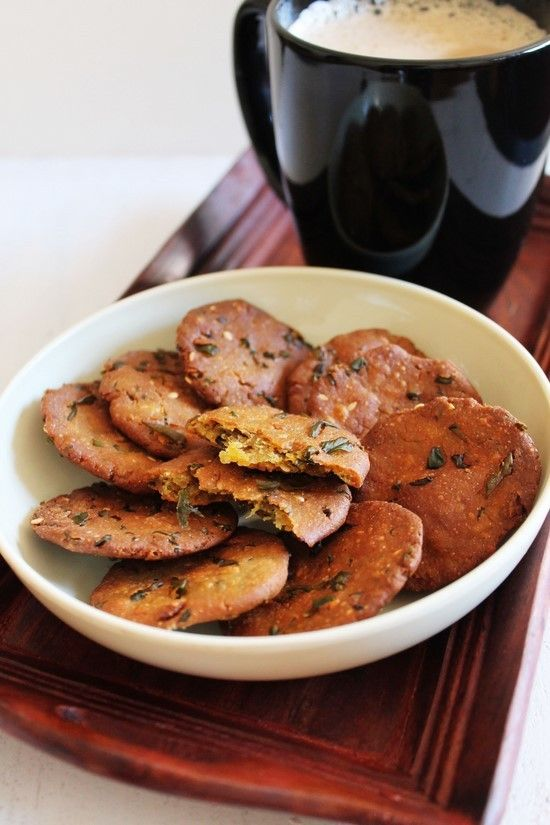

Methi Bajri Wada
Ingredients:
- 1 cup Bajra flour (pearl millet flour)
- 1/2 cup Methi (fenugreek leaves), finely chopped
- 1/4 cup Onion, finely chopped
- 2 Green chilies, finely chopped
- 1/2 inch Ginger, grated
- 1/4 teaspoon Turmeric powder
- 1/2 teaspoon Red chili powder
- 1/2 teaspoon Coriander powder
- 1/2 teaspoon Cumin seeds
- Salt to taste
- Oil for frying
Instructions:
- In a mixing bowl, combine bajra flour, chopped methi, chopped onion, green chilies, grated ginger, turmeric powder, red chili powder, coriander powder, cumin seeds, and salt.
- Add water gradually to form a stiff dough.
- Divide the dough into small portions and shape them into round wadas.
- Heat oil in a pan for frying.
- Once the oil is hot, carefully slide the wadas into the hot oil.
- Fry the wadas on medium heat until they turn golden brown and crispy from all sides.
- Remove the fried wadas from the oil and drain excess oil on paper towels.
- Serve hot with chutney or sauce.